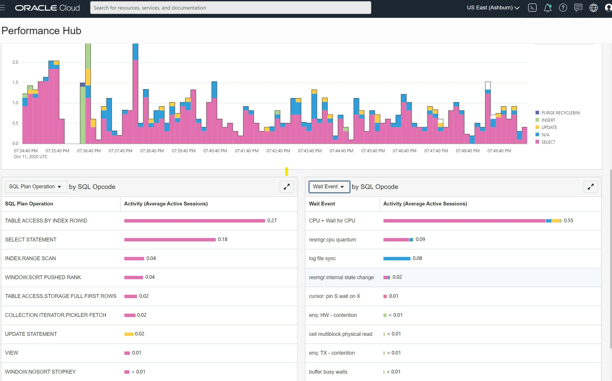

This was first published on https://www.dbi-services.com/blog/ycsb-nosql-benchmark-on-oracle-database/ (2020-10-12)
Republishing here for new followers. The content is related to the versions available at the publication date.
.
The NoSQL technologies emerged for Big Data workloads where eventual consistency is acceptable and scaling out to multiple server nodes is an easy answer to increase throughput. With cloud services rising, those key-value document datastores started to be used by the web-scale companies for some transactional processing workloads as well. The solutions can provide high performance and easy partitioning capabilities thanks to the very simple API of NoSQL. Each table or collection, has only one key, the primary key, which is used for hash partitioning, sharding, and indexing. The API is a simple get/put by primary key, or scan on a range. There’s no referential integrity and no join, so that each query access only one shard, which makes each call it fast and predictable. There’s limited consistency provided so that each call do not have to wait for cross-node latency. There’s no row set operations link in SQL: you scale by adding more threads rather than having more work done by each thread.
Even if the API is very simple, there no standard API, and each technology provides a different interface for the application. In order to compare the performance, a benchmark application has been developed by the research division of Yahoo in 2010 (all explained in this paper: https://www2.cs.duke.edu/courses/fall13/cps296.4/838-CloudPapers/ycsb.pdf).This open source YCSB (Yahoo Cloud Serving Benchmark), in addition to providing a core workload generator, includes extensible clients for any NoSQL database. Look at the current clients:
[opc@al YCSB]$ grep -r "ycsb.DB" . | awk -F/ '{print $2}' | sort -u | paste -sd,
accumulo1.9,aerospike,arangodb,asynchbase,azurecosmos,azuretablestorage,cassandra,cloudspanner,couchbase,couchbase2,crail,elasticsearch,elasticsearch5,geode,googlebigtable,googledatastore,griddb,hbase1,hbase2,hypertable,ignite,infinispan,jdbc,kudu,maprjsondb,memcached,mongodb,nosqldb,orientdb,rados,redis,rest,s3,solr,solr6,solr7,voldemort,voltdb
In the list of clients, you can see that it goes beyond the usual NoSQL datastores. There’s a JDBC client storing the attibutes in a relational table. I have added the support for the FETCH FIRST n ROWS ONLY so that you can run it on Oracle Database and any SQL:2008 compatible RDBMS.
Here is how to download the latest relase of YCSB:
cd /var/tmp
release="$(curl https://github.com/brianfrankcooper/YCSB | awk '/[/]download[/]/{print $NF}' )"
curl --location "$release" | tar -zxvf -
However, my Pull Request to support the FETCH FIRST n ROWS ONLY has been merged but is not yet included in the release, so better compile from source if you want to use YCSB on Oracle Database.
sudo yum-config-manager --add-repo http://repos.fedorapeople.org/repos/dchen/apache-maven/epel-apache-maven.repo
sudo yum-config-manager --enable epel-apache-maven
sudo yum install -y git apache-maven
This installs Git and Maven if you don’t have it already (I’m running an Autonomous Linux on the Oracle Free Tier as it gives me an always free environment with an Oracle Database). Of course you can run it anywhere but remember that, by the nature of the NoSQL API, the network latency between the application and the database is quickly a bottleneck.
I compile YCSB:
(
git clone https://github.com/brianfrankcooper/YCSB.git
cd YCSB
mvn clean package
mvn -pl site.ycsb:jdbc-binding -am package -DskipTests dependency:build-classpath -DincludeScope=compile -Dmdep.outputFilterFile=true
) > mvn.log
I keep the log in “mvn.log” and I’ll use it to get the classpath
YCSB will connect with JDBC but I’m using the OCI client here (OCI is the Oracle Call Interface). I’ll also use sqlplus to create the tables. Here is how to download them:
cd /var/tmp
wget https://download.oracle.com/otn_software/linux/instantclient/oracle-instantclient-basic-linuxx64.rpm
wget https://download.oracle.com/otn_software/linux/instantclient/oracle-instantclient-sqlplus-linuxx64.rpm
sudo yum localinstall -y oracle-instantclient-basic-linuxx64.rpm oracle-instantclient-sqlplus-linuxx64.rpm
In this example, I’ll connect to my free Oracle Autonomous Database for which I’ve downloaded the wallet into my TNS_ADMIN directory.
Here is my quick and dirty way to set the ORACLE_HOME from an installed Instant Client with sqlplus:
Updated (see comments) I’get important directories for future use:
MY_ORACLE_HOME=$(sqlplus /nolog <<<'get ?"' | awk -F'"' '/SP2-0160/{print $(NF-2)}')
MY_TNS_ADMIN=$MY_ORACLE_HOME/network/admin
MY_LD_LIBRARY_PATH=$MY_ORACLE_HOME
MY_CLASSPATH="$MY_ORACLE_HOME/ojdbc8.jar"
You may choose to use the JDBC thin driver, and even run this from the Cloud Shell. For the OCI thick JDBC I need to define the CLASSPATH for the .jar and LD_LIBRARY_PATH for the .so
If you are too lazy to create a database, I let you use the one I’ve shared for the SQL101 presentation. Here is my wallet.
wget https://objectstorage.us-ashburn-1.oraclecloud.com/n/idhoprxq7wun/b/pub/o/Wallet_sql101.zip
sudo unzip -od $MY_TNS_ADMIN Wallet_sql101.zip
Please be smart if you use my database, you are not alone there. It is easy to open an Oracle Cloud trial that will leave you with a free Oracle Database for life.
Here is my configuration file providing the connection settings. If you used my SQL101 wallet this will connect to my database with the DEMO user. I’ll remove it only if someone does nasty things. It is limited to very small storage quota so this is only to check how it works – not real scale benchmark.
cat > /tmp/ycsb.database.properties <<CAT
db.driver=oracle.jdbc.driver.OracleDriver
db.url=jdbc:oracle:oci:@sql101_tp
db.user=SQL101DEMO
db.passwd=**P455w0rd**
jdbc.batchupdateapi=true
db.batchsize=1000
CAT
I’m using the OCI driver here, as I have the Instant Client installed. Of course you can use the thin driver, and even add it as a maven dependency. If you do this, please document it in comments.
YCSB workload is defined by a few properties:
cat > /tmp/ycsb.workload.properties <<'CAT'
threadcount=20
fieldcount=1
fieldlength=42
recordcount=100000
operationcount=10000
workload=site.ycsb.workloads.CoreWorkload
readallfields=true
readproportion=0.3
updateproportion=0.2
scanproportion=0.1
insertproportion=0.4
requestdistribution=zipfian
minscanlength=1
maxscanlength=1000
CAT
All this is documented in https://github.com/brianfrankcooper/YCSB/wiki/Core-Properties
Here is my sqlplus script to create the table used by YCSB
cat > /tmp/ycsb.create.sql <<'SQL'
set pagesize 1000 long 1000000 echo on
whenever sqlerror exit failure
exec for i in (select * from user_tables where table_name='USERTABLE') loop execute immediate 'drop table USERTABLE'; end loop;
purge recyclebin;
create table USERTABLE (
YCSB_KEY varchar2(25) primary key,
FIELD0 &&1
)
&&2
/
select dbms_metadata.get_ddl('TABLE','USERTABLE') from dual;
exit
SQL
It takes the datatype as first parameter, and table attributes as second parameters. I use this to compare various physical data model alternatives. For a scalable key-value document store you will probably partition by hash on the key, with the primary key index being local, maybe even all stored as an Index Organized Table. Any RDBMS has specific features to scale a key-value workload. NoSQL databases usually restrict their implementation to those physical representations, but they didn’t invent new algorithms for access by primary key as it was there in RDBMS for a long time. But, as some RDBMS like Oracle Database are also optimized to handle complex queries, the default table attributes may not be the best suited for NoSQL-like access.
When running on my SQL101 you are limited in space, so let’s keep it simple:
sqlplus SQL101DEMO/"**P455w0rd**"@sql101_tp @ /tmp/ycsb.create.sql "varchar2(42)" "organization index nologging --partition by hash(YCSB_KEY) partitions 8"
Now I have a USERTABLE in the DEMO schema.
I put all environment variables in setenv.sh which is called by ycsb.sh
cat > /var/tmp/YCSB/bin/setenv.sh <<CAT
TNS_ADMIN=$MY_TNS_ADMIN
CLASSPATH=$MY_CLASSPATH:$(awk -F= '/^classpath=/{cp=$2}END{print cp}' /var/tmp/mvn.log)
export LD_LIBRARY_PATH=$MY_LD_LIBRARY_PATH
CAT
The LD_LIBRARY_PATH is required to find libocijdbc19 as I’m using the OCI driver. You can also put it in etc/ld.so.conf.d/oic.conf if you prefer. The CLASSPATH includes the one from maven output, plus the ojdbc8.jar
I am now ready to load some data:
/var/tmp/YCSB/bin/ycsb.sh load jdbc -P /tmp/ycsb.workload.properties -P /tmp/ycsb.database.properties
This reads /tmp/ycsb.workload.properties for the number of records to create.
Here is how to run the workload defined in /tmp/ycsb.workload.properties
/var/tmp/YCSB/bin/ycsb.sh run jdbc -P /tmp/ycsb.workload.properties -P /tmp/ycsb.database.properties | tee run.log
I’m showing below the Performance Hub when I’ve run it on my SQL101 database with 20 client threads.

Here is how to quickly parse the log to see the result:
awk -F, '/^\[(READ|SCAN|INSERT|UPDATE|DELETE)\].*95thPercentile/{printf "%10.3f %-10s ",$3/1e6,$1}' run.log | sort | paste -s
0.355 [SCAN] 0.000 [INSERT] 0.009 [UPDATE] 0.003 [READ]
Measuring the percentiles, 95th Percentile here, is interresting for NoSQL-like workloads. The goal is to scale to million of users and get acceptable response time for most of the interactions. And NoSQL databases are usually used to “web-scale” into nodes distributed over the internet where some latency outliers may happen. Looking at percentiles helps to focus on the SLA while accepting those outliers.
This “jdbc” client declares all attributes as columns in the table. Of course, even if RDBMS works on structured data in order to ease the application code that can then rely on a schema, SQL includes DDL with all agility to add columns later. But in addition to the traditional relational tables, all the major RDBMS can also be used to store documents. And some have even an optimized datatype to store a JSON document in binary format (JSONB in PostgreSQL, OSON in Oracle). Oracle even provides a NoSQL-like API for it: SODA. I hope that Oracle will contribute to the YCSB project adding a client for SODA.
The NoSQL APIs are similar but may have some implementation differences and, for sure, different calls. YCSB implements read, scan, update, insert, delete and here is how it maps to some popular NoSQL databases:
With the evolution of RDBMS to converged databases, it is useful to compare the performance of key-value workloads with JDBC SQL API and NoSQL put/get APIs. YCSB can be used and extended for that. Among the most advanced converged databases: